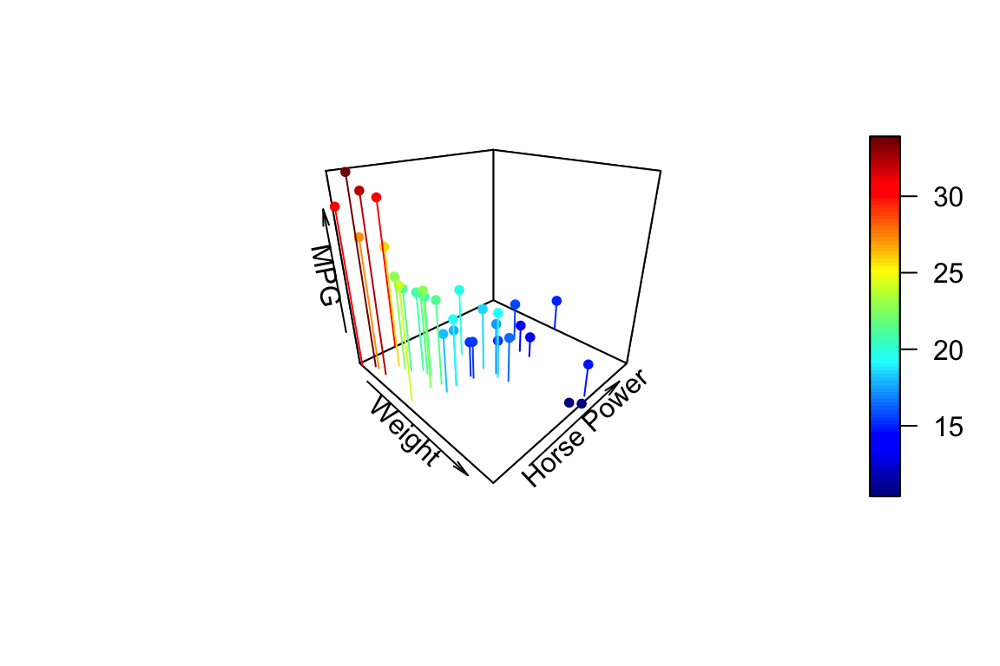

Chapter 23 Multiple regression
23.1 Libraries to install
We’ll be using several new packages for this class session. Install the following packages via one of the standard install mechanisms:
HistData– provides theGaltonFamiliesexample data sets we’ll work withplot3D– for generating 3D plotsrgl– NOTE: On OS X,rglrequires you to install a program called XQuartz. XQuartz can be downloaded from the XQuartz Home Page. If you’re on a Mac, install XQuartz before installingrgl. You may have to reboot your computer after installing XQuartz.
23.2 Review of bivariate regression
Recall the model for bivariate least-squares regression. When we regress \(Y\) and \(X\) we’re looking for a linear function, \(f(X)\), for which the following sum-of-squared deviations is minimized:
\[ \sum_{i=1}^n (y_i - f(x_i))^2 \]
The general form a linear function of one variable is a line,
\[ \widehat{Y} = f(x) = a + bX \]
where \(b\) is the slope of the line and \(a\) is the intercept.
23.3 Multiple regression
The idea behind multiple regression is almost exactly the same as bivariate regression, except now we try and fit a linear model for \(Y\) using multiple explanatory variables, \(X_1, X_2,\ldots, X_m\). That is we’re looking for a linear function, \(f(X_1, X_2,\ldots,X_m)\) that minimizes:
\[ \sum_{i=1}^n(y_i - f(x_1, x_2,\ldots, x_m))^2 \]
A linear function of more than one variable is written as:
\[ \widehat{Y} = f(X_1, X_2,\ldots,X_m) = a + b_1X_1 + b_2X_2 + \cdots + b_mX_m \]
Where \(a\) is the intercept and \(b_1, b_2,\ldots,b_m\) are the regression coefficients.
23.3.1 Geometrical interpretation
Geometrically the regression coefficients have the same interpretation as in the bivariate case – slopes with respect to the corresponding variable. When there are two predictor variables, the linear regression is geometrically a plane in 3-space, as shown in the figure below. When there are more than two predictor variables, the regression solution is a hyper-plane.

Mathematically, the best fitting regression coefficients, \(b_1, b_2,\ldots,b_m\), are found using linear algebra. Since we haven’t covered linear algebra in this course, I will omit the details. Conceptually the thing to remember is that the regression coefficients are related to the magnitude of the standard deviations of the the predictor variables and the covariances between the predictor and outcome variables.
23.4 Interpretting Multiple Regression
Here are some things to keep in mind when interpretting a multple regression:
In most cases of regression, causal interpretation of the model is not justified.
Standard bivariate and multiple regression assumes that the predictor variables ( (\(X_1, X_2, \ldots\)) are observed without error. That is, uncertainty in the regression model is only associated with the outcome variable, not the predictors.
Comparing the size of regression coefficients only makes sense if all the predictor (explanatory) variables have the same scale
If the explanatory variables (\(X_1, X_2,\ldots,X_m\)) are highly correlated, then the regression solution can be “unstable” – a small change in the data could lead to a large change in the regression model.
23.6 Example data set: mtcars
The mtcars dataset contains information on fuel consumption and ten other aspects of car design (see ?mtcars for more info). We’ll use multiple regression to model the relationship between fuel consumption (mpg) and a vehicles weight (wt) and horsepower (hp).
23.7 Visualizing and summarizing the variables of interest
Before carrying out any regression modle it’s always a good idea to start out with visualizations of the individual variables first.
hist.wt <- ggplot(mtcars, aes(wt)) + geom_histogram(bins=8)
hist.hp <- ggplot(mtcars, aes(hp)) + geom_histogram(bins=8)
hist.mpg <- ggplot(mtcars, aes(mpg)) + geom_histogram(bins=8)
plot_grid(hist.wt, hist.hp, hist.mpg, nrow = 1, labels = c("A", "B", "C"))Let’s also create some quick data summaries for our variables:
mtcars.subset <-
mtcars %>%
select(wt, hp, mpg)
summary(mtcars.subset)
#> wt hp mpg
#> Min. :1.513 Min. : 52.0 Min. :10.40
#> 1st Qu.:2.581 1st Qu.: 96.5 1st Qu.:15.43
#> Median :3.325 Median :123.0 Median :19.20
#> Mean :3.217 Mean :146.7 Mean :20.09
#> 3rd Qu.:3.610 3rd Qu.:180.0 3rd Qu.:22.80
#> Max. :5.424 Max. :335.0 Max. :33.90And a correlation matrix to summarize the bivariate associations between the variables:
cor(mtcars.subset)
#> wt hp mpg
#> wt 1.0000000 0.6587479 -0.8676594
#> hp 0.6587479 1.0000000 -0.7761684
#> mpg -0.8676594 -0.7761684 1.0000000We can use the GGally::ggpairs() function, which we’ve seen previously, to create a visualization of the bivariate relationships:

From the scatter plots and correlation matrix we see that weight and horsepower are positively correlated, but both are negatively correlated with fuel economy. This jives with our intuition – bigger cars with more powerful engines generally get lower gas mileage.
23.8 3D plots
Since we’re building a model that involves three variables, it makes sense to look at at 3D plot. ggplot2 has no built in facilities for 3D scatter plots so we’ll use a package called plot3D. plot3D follows the plotting conventions of the base R-graphics capabilities, so we can’t build up figures in layers in the same way we do in ggplot. Instead we pass all the formatting arguments to a single function call.
To create a 3D scatter plot we can use the plot3D::points3D function. The argument pch sets the type of plotting character to use in the plot (for a graphical key of the available plotting characters see this link).
library(plot3D)
# create short variable names for convenience
wt <- mtcars$wt
hp <- mtcars$hp
mpg <- mtcars$mpg
points3D(wt, hp, mpg,
xlab = "Weight", ylab = "Horse Power", zlab = "MPG",
pch = 20) 
We can change the angle of the 3D plot using the arguments theta and phi which change the “azimuthal direction” and “colatitude” (inclination angle). See the wikipedia page on spherical coordinate systems for more explanation of this values.
points3D(wt, hp, mpg,
xlab = "Weight", ylab = "Horse Power", zlab = "MPG",
pch = 20,
theta = 20, phi = 20 # these set viewing angle
)
If you want the points to have a uniform color specify a single color in the col argument. Here we also add vertical lines to the plot using the type argument and show
points3D(wt, hp, mpg,
xlab = "Weight", ylab = "Horse Power", zlab = "MPG",
pch = 20,
theta = 45, phi = 25,
type = "h"
)
For more examples of how you can modify plots generated with the plot3D package see this web page.
23.9 Fitting a multiple regression model in R
Using the lm() function, fitting multiple regression models is a straightforward extension of fitting a bivariate regression model.
fit.mpg <- lm(mpg ~ wt + hp, data = mtcars.subset)
summary(fit.mpg)
#>
#> Call:
#> lm(formula = mpg ~ wt + hp, data = mtcars.subset)
#>
#> Residuals:
#> Min 1Q Median 3Q Max
#> -3.941 -1.600 -0.182 1.050 5.854
#>
#> Coefficients:
#> Estimate Std. Error t value Pr(>|t|)
#> (Intercept) 37.22727 1.59879 23.285 < 2e-16 ***
#> wt -3.87783 0.63273 -6.129 1.12e-06 ***
#> hp -0.03177 0.00903 -3.519 0.00145 **
#> ---
#> Signif. codes: 0 '***' 0.001 '**' 0.01 '*' 0.05 '.' 0.1 ' ' 1
#>
#> Residual standard error: 2.593 on 29 degrees of freedom
#> Multiple R-squared: 0.8268, Adjusted R-squared: 0.8148
#> F-statistic: 69.21 on 2 and 29 DF, p-value: 9.109e-12As was the case for bivariate regression, the broom package functions tidy, glance, and augment can be useful for working with the results from fitting the mode.
tidy(fit.mpg)
#> # A tibble: 3 × 5
#> term estimate std.error statistic p.value
#> <chr> <dbl> <dbl> <dbl> <dbl>
#> 1 (Intercept) 37.23 1.599 23.28 2.565e-20
#> 2 wt -3.878 0.6327 -6.129 1.120e- 6
#> 3 hp -0.03177 0.009030 -3.519 1.451e- 323.10 Visualizing the regression plane
For multiple regression on two predictor variables we can visualize the plane of best fit but adding it as a surface to our 3D plot.
# Create a regular grid over the range of wt and hp values
grid.lines = 10
wt.grid <- seq(min(wt), max(wt), length.out = grid.lines)
hp.grid <- seq(min(hp), max(hp), length.out = grid.lines)
wthp.grid <- expand.grid(x = wt.grid, y = hp.grid)
grid.df <- data.frame(wt = wthp.grid[,1], hp = wthp.grid[,2])
# Predicted mpg at each point in grid
mpg.grid <- matrix(predict(fit.mpg, newdata = grid.df),
nrow = grid.lines, ncol = grid.lines)
# Predicted mpg at observed
mpg.predicted <- predict(fit.mpg)
# scatter plot with regression plane
points3D(wt, hp, mpg,
pch = 16, theta = 30, phi = 5,
col = "red", alpha=0.9,
xlab = "Weight", ylab = "Horsepower", zlab = "MPG",
surf = list(x = wt.grid,
y = hp.grid,
z = mpg.grid,
facets = NA,
fit = mpg.predicted,
col = "black", alpha = 0.5)
)23.11 Interactive 3D Visualizations Using OpenGL
The package rgl is another package that we can use for 3D visualization. rgl is powerful because it lets us create interactive plots we can rotate and zoom in/out on.
Once you’ve installed and loaded rgl try the following code.
# create 3D scatter, using spheres to draw points
plot3d(wt, hp, mpg,
type = "s",
size = 1.5,
col = "red")
# only need to include this line if using in a markdown document
rglwidget()
We can add a 3d plane to our plot, representing the multiple regression model, with the rgl.planes() function as shown below.
coefs <- coef(fit.mpg)
b1 <- coefs["wt"]
b2 <- coefs["hp"]
c <- -1
a <- coefs["(Intercept)"]
plot3d(wt, hp, mpg,
type = "s",
size = 1.5,
col = "red")
rgl.planes(b1, b2, c, a, alpha = 0.9, color = "gray")
rglwidget()
23.12 Examining the residuals
Residual plots are useful for multiple regression, just as they were for bivariate regression.
First we plot the residuals versus each of the predictor variable individually.
wt.resids <-
mtcars.subset.augmented %>%
ggplot(aes(x = wt, y = .resid)) +
geom_point() +
geom_hline(yintercept = 0, linetype = 'dashed', color='red') +
labs(x = "Weight", y = "Residuals")
hp.resids <-
mtcars.subset.augmented %>%
ggplot(aes(x = hp, y = .resid)) +
geom_point() +
geom_hline(yintercept = 0, linetype = 'dashed', color='red') +
labs(x = "Horsepower", y = "Residuals")
plot_grid(wt.resids, hp.resids, labels=c("A", "B"))And now we plot the residuals in 3D space, with a plane parallel to the xy-plane (wt, hp-plane) representing the plane about which the residuals should be homogeneously scattered if the assumptions of the linear regression model hold.
.resid <- mtcars.subset.augmented$.resid
# coefficients for plane perpindicular to
# xy-axis intercepting the z-axis at 0
b1 <- 0
b2 <- 0
c <- -1
a <- 0
plot3d(wt, hp, .resid,
type = "s",
size = 1.5,
col = "red",
aspect = c(2,2,1))
rgl.planes(b1, b2, c, a, alpha = 0.9, color = "gray")
rglwidget()